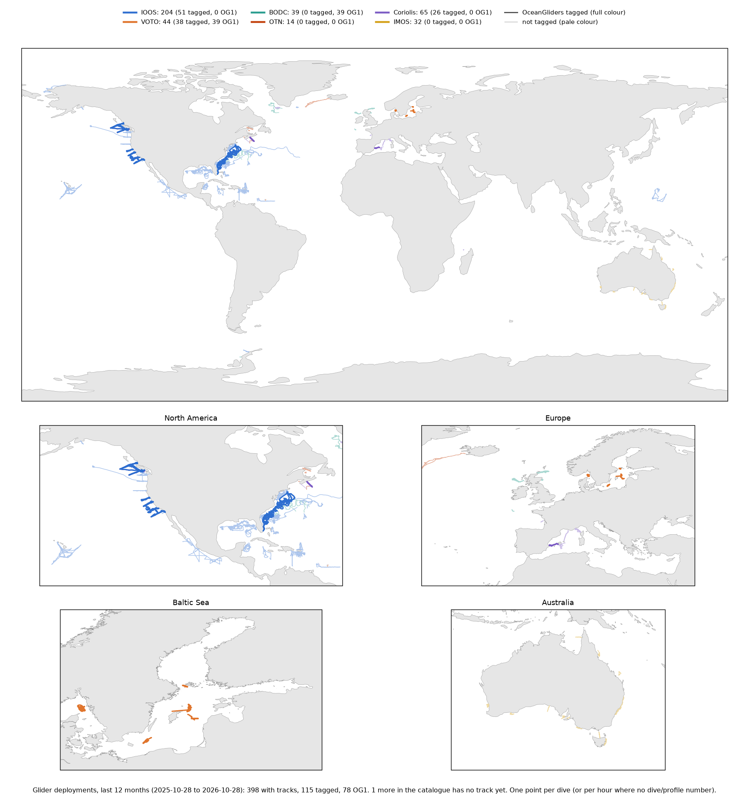

—
Findings and guidance for data centresAssumptions and limitationsHow this dashboard was made
Every glider deployment found on six data centres: the IOOS Glider DAC, VOTO, BODC, OTN, Coriolis (the OceanGliders GDAC) and IMOS/ANFOG. A deployment record is tagged when its network global attribute starts with "OceanGliders". The same deployment can be held by more than one data centre; unique deployments are matched on WMO ID and start date. The tag became an OG1.0 requirement only in October 2026, so this shows readiness, not compliance.
Deployments
OceanGliders network tag
OG1.0 format
Records held by each data centre. Solid: tagged OceanGliders. Faded: not tagged.
One position per dive (or per hour where the data have no dive or profile number). Colour: data centre. Windows run to 28 October 2026 and include every deployment active in them.

All records per start year in grey; the tagged part in the colour of the data centre holding it.
Tagged records by mission and region, from the network value, coloured by data centre.
Records per data centre by file format (OG1.0 counted when any of a deployment's files is OG1.0), and deployments with real-time (telemetered, often decimated) and recovered (full-resolution) data, by the highest QC level stated for each.
Whether records carry QC flag variables, whether the flags are described the CF way (flag_values with a matching flag_meanings), and which flag scheme they use.
Glider type per data centre, where the metadata say. The IOOS format has no glider-model attribute, so many IOOS records are unknown.
The 25 largest contributors by records, split by data centre. Solid: tagged. Faded: not tagged.
Share of each institution's records meeting each criterion, per data centre. For the steering team: names institutions against a requirement that is new.
network starts with "OceanGliders" (on any of the deployment's files).oceanGliders_site or site is present.network only when the provider adds it (C-PROOF's do), alongside some OG1 files. Its institution is the glider owner in its deployment metadata; times, glider model and WMO ID come from the GDAC's own trajectory index.-delayed datasets, VOTO delayed_/OG_complete_, OTN _delayed, BODC's recovery file collection, Coriolis data mode P (its P files are full resolution, checked on two Slocum deployments: see Spot checks) and IMOS mission folders are recovered; the rest are real time. "Delayed" in IOOS, VOTO and OTN names means recovered, not delayed-mode QC.—
Written as a starting point for organising glider data management across data assembly centres, and for a federated OceanGliders ERDDAP. Every number below comes from the same snapshot as the charts above (2026-10-27/28); the spot checks at the end record what was verified by opening files.
| Data centre | Records | Network tag | Site tag | OG1.0 | Recovered data | Delayed-mode QC | CF QC flags | WMO ID | Platform known |
|---|
| Product or field | How it differs |
|---|---|
| Real time vs recovered | Marked by dataset names (IOOS -delayed, VOTO nrt_/delayed_, OTN _realtime/_delayed), a separate file collection (BODC), a data_mode letter (Coriolis R/A/P) or a folder and file version (IMOS REALTIME/ FV00 vs FV01). No two data centres use the same mechanism. |
| What "delayed" means | Recovered full-resolution data at IOOS, VOTO and OTN; delayed-mode scientific QC at IMOS (and in Argo practice). The same word marks different products. |
| QC level | Stated in free-text processing_level (IOOS, VOTO, BODC, OTN), by citing a QC manual (Coriolis qc_manual), or by data_mode (IMOS). No controlled list, so "delayed mode dataset" and "no quality control" can appear in the same sentence. |
| QC flags | IOC/QARTOD 1, 2, 3, 4, 9 (IOOS, VOTO IOOS-format files), Argo-style 0 to 9 (Coriolis EGO, IMOS, the few flagged OTN files), _QC variables without flag attributes (BODC OG1), or none (VOTO OG1, most OTN). Same numbers carry different words (code 2 "not_evaluated" vs "UNKNOWN"). |
| File format | OG1.0 (VOTO, BODC), IOOS Glider DAC v2/v3 (IOOS, OTN, VOTO), EGO 1.2 to 1.4 (Coriolis), IMOS-1.4 (IMOS). |
| Network and site tags | Present only where the provider writes them (VOTO; C-PROOF, Scripps, WHOI at IOOS; C-PROOF and others in EGO at Coriolis). Site written as site or oceanGliders_site. Some values use networks or regions not in the BOON vocabulary, or ";" instead of "," between networks. |
| WMO ID | Global attribute (VOTO wmo_id, BODC wmoid), platform variable (IOOS), deployment JSON and index (Coriolis), or absent (IMOS, most OTN). |
| Glider model | Global attributes (VOTO), instrument list (BODC), platform variables (EGO), folder name (IMOS), or not recorded (IOOS). |
| Time coverage | ERDDAP time ranges (IOOS, VOTO, BODC, OTN), file attributes (IMOS), or neither (EGO files; the Coriolis index fills the gap but its start times are unreliable). |
| Institution | Free text: acronyms (NOC, NOCS, NOCL), full names, or lists of partners in one string. |
| Access | ERDDAP datasets (IOOS, VOTO, OTN, BODC real time), an ERDDAP file collection without byte ranges (BODC recovery), an HTTP file tree with an index (Coriolis) or an S3 archive (IMOS). |
| Processing software | Not recorded in any standard attribute; at best free text in history or processing. |
For each data centre: what is missing for an OceanGliders dataset (tags, format, QC description, identifiers), and where it does the same thing differently from the others.
— records · — tagged · — OG1 · — recovered · — delayed-mode QC · — CF QC flags · — WMO ID
network tag is used only by C-PROOF, Scripps and WHOI; the other contributors, including the largest (Rutgers, the OOI arrays, Oregon State, NAVOCEANO), carry none.site as in the BOON guideline; most C-PROOF datasets have no site attribute, and a few use the non-standard oceanGliders_site.processing_level, which often says "Delayed mode dataset" alongside "No quality control provided".platform variable, not in the global attributes.— records · — tagged · — OG1 · — recovered · — delayed-mode QC · — CF QC flags · — WMO ID
processing_level states QARTOD QC; the flags exist only in the parallel IOOS-format datasets.network and site, with values from the BOON vocabulary.nrt_, delayed_, OG_nrt_, OG_complete_; "delayed" means recovered.— records · — tagged · — OG1 · — recovered · — delayed-mode QC · — CF QC flags · — WMO ID
network or site tags._QC variables have no flag_values or flag_meanings, so they are not CF-described and their scheme can't be read._R, with processing_level "No quality control applied"; recovery files expected to move to _P under the proposed OG1 data modes.— records · — tagged · — OG1 · — recovered · — delayed-mode QC · — CF QC flags · — WMO ID
network tags and few WMO IDs.flag_meanings strings are malformed.platform_type._realtime and _delayed datasets in the IOOS v3 "noqartod" format; every file says it is provided "as is" without QC.— records · — tagged · — OG1 · — recovered · — delayed-mode QC · — CF QC flags · — WMO ID
qc_manual says "none".qc_manual DOI) rather than in processing_level.glider_traj_index.txt), which no other data centre does.— records · — tagged · — OG1 · — recovered · — delayed-mode QC · — CF QC flags · — WMO ID
network or site tags.REALTIME/ and delayed mode (FV01, "Delayed Mode") per mission, with QC flags on nearly every file; the only data centre where delayed-mode QC is the norm.data_mode attribute that every data centre fills the same way (R real time, P recovered, D delayed-mode QC, as proposed for OG1). Stop using "delayed" for recovered data.processing_level with a short controlled list (raw; automatic QC; delayed-mode QC), plus a citation of the QC procedure and the processing software and version.flag_values and matching flag_meanings on every QC variable, from one agreed scheme linked to a vocabulary (SeaDataNet L20 has been proposed), with real flag values, not placeholders.network and site (validated against the BOON vocabulary), WMO ID, glider model, institution as a persistent identifier (e.g. EDMO or ROR), and time_coverage_start/end.—
processing_level, classified by keywords (rules under Definitions). Unusual wording can be misclassified; QC flag values themselves were checked in only one file.-delayed, VOTO glider and mission, BODC and OTN deployment number, Coriolis and IMOS folder). A deployment split across several keys, or one key holding several deployments, is miscounted.network starts with "OceanGliders"; values outside the BOON vocabulary still count. Format is read from Conventions and format_version strings; files were not validated against the OG1.0 specification.flag_values and a flag_meanings list of the same length; meanings were not checked against a vocabulary, nor flags against the data.| Check | Where | Result | Date |
|---|
The prompt below, synthesised from the requests made while building this dashboard, reproduces the harvest, the analyses and this page. The code, the data snapshot and this page are public at github.com/FiIipaCarvalho/og-dac-metadata (README, PROMPT.md, harvest scripts).
Build an interactive dashboard, for the OceanGliders steering team and glider data-centre managers, showing how far glider data across data centres meet OceanGliders' requirements (OG1.0 format, `network` and `site` tags from the BOON metadata guidelines, an approved data centre), and use it as a launchpad for organising data management across data assembly centres (DACs), with a federated OceanGliders ERDDAP in mind. Frame everything as readiness, not compliance: the `network`/`site` requirement was only agreed in October 2026.
## Data: harvest every glider deployment from six data centres, from the root of each
1. **IOOS Glider DAC** (https://gliders.ioos.us/erddap): `allDatasets`, then `info/<datasetID>/index.csv` for every dataset. Keep all global attributes, the `platform` variable's `wmo_id` and `type`, the variable list, and `flag_values`/`flag_meanings` of every flag variable.
2. **VOTO** (https://erddap.observations.voiceoftheocean.org/erddap): the `nrt_`, `delayed_`, `OG_nrt_` and `OG_complete_` datasets; same fields.
3. **BODC** (https://linkedsystems.uk/erddap): datasets with glider/Slocum/Seaglider in the title, plus the OG1 file collections `Public_OG1_Data_001` (real time) and `Public_OG1_Data_001_Recovery` (recovery), one EGO deployment JSON per folder (the files can't be read by byte range).
4. **OTN** (https://erddap.oceantrack.org/erddap): Trajectory/TrajectoryProfile datasets.
5. **Coriolis, the OceanGliders GDAC** (https://data-oceangliders.ifremer.fr/): `glider_traj_index.txt` (time coverage, WMO, glider model, owner per file), each deployment folder's JSON, and each NetCDF header read by HTTP byte range.
6. **IMOS ANFOG** (S3 `imos-data`, prefix `IMOS/ANFOG/`): one header per deployment folder (FV01 preferred) by byte range.
Gotchas to handle: some ERDDAPs publish a global attribute `id` that is not the datasetID (store the datasetID separately); netCDF4 isn't thread-safe (read files in processes); check a file's signature before choosing the classic or HDF5 reader (a wrong guess sits through long timeouts); EGO files have no time-coverage attributes and often fill `TIME` but not `JULD`; the Coriolis index `time_coverage_start` has 1970/2000 placeholders and earlier-deployment starts (use `deployment_start_date`, or the folder date when they disagree by more than 60 days); keep Coriolis to a few parallel requests.
## One row per deployment per data centre, with
- **Tag:** `network` starts with "OceanGliders"; mission and region from its `>` parts; **site** from `site` or `oceanGliders_site`.
- **Format:** OG1.0, EGO, IOOS DAC (incl. older Unidata/COARDS files), IMOS, Other; plus OG1 available on any file.
- **Data mode column:** from `data_mode`, else naming, with recovered datasets as P (never D from a name).
- **Stream:** real time (telemetered, often decimated) vs recovered (full resolution). Recovered: IOOS `-delayed`, VOTO `delayed_`/`OG_complete_`, OTN `_delayed`, BODC recovery collection, Coriolis data mode P (verify by sampling resolution of a P vs R file), IMOS mission folders. "Delayed" in names means recovered, not delayed-mode QC.
- **QC level per stream** (highest stated): Delayed mode (manually calibrated / QC'd in delayed mode, data_mode D, IMOS "Delayed Mode"); Automatic QC (automatic, QARTOD, Argo-method, EGO QC-tests manual DOI 10.13155/51485 or EGO processing chain, data_mode A); No QC (no QC, raw, Level 0, "as is", IMOS FV00); else Not stated; BODC folder-only deployments Not read. Check "no QC" wording before "delayed mode", because IOOS writes "Delayed mode dataset" for recovered raw data.
- **QC flags:** present (flag attributes or `_qc` names); CF-described (every flag variable has `flag_values` and an equal-length `flag_meanings`); scheme by majority of flag variables (IOC/QARTOD 1,2,3,4,9; Argo-style 0-9; SeaDataNet L20 with A/B/Q; Other; Not described).
- **Platform:** Slocum, Seaglider, SeaExplorer, Spray or Unknown from attributes, title/summary text and the Coriolis index; drop wave gliders everywhere.
- **Glider-days:** end minus start; leave out spans under 0 or over 400 days.
- **WMO ID**, **active since** two years before the snapshot, **institution** normalised (merge spelling variants and acronyms, keep the raw string), and a **match group** for the same deployment on more than one data centre (same WMO ID, start dates within 3 days).
## Dashboard
- Each data centre has its own colour throughout. Tagged records are drawn in that colour, untagged in grey; categories are told apart by **pattern** in the data centre's colour (solid for the target category, then stripes, dots, fine lines, faded, outline), never by shades of one colour.
- **Tiles**, in three labelled rows: deployments (records, unique, glider-days); OceanGliders network tag (tagged deployments, share, glider-days share, data centres with tags "N of M", institutions tagging "N of M"); OG1.0 format (the same five figures for OG1.0).
- **Deployments by data centre** (tagged solid, untagged faded).
- **By start year**, with a Highlight switch (Tagged | OG1.0), a Records | Glider-days switch and three views: highlighted vs all (grey all, highlighted part coloured by data centre), All by data centre, highlighted only.
- **Where the tags point:** mission > region.
- **Format**, **real-time and recovered data by QC level** (two rows per data centre), **QC flags** (present/CF and scheme) and **platforms**, all with the same three-way switch.
- **Largest institutions** split by data centre.
- **Readiness matrix** by institution and data centre (network tag, site tag, recovered data, delayed-mode QC, WMO ID, active, OG1.0, QC flags, CF flags, glider-days), sortable and searchable, with a Gradient | Traffic light switch (red under 50%, amber 50-80% with a strong amber, green 80% and over).
- **Definitions** for every criterion and caveat.
- **Assumptions and limitations** of the analysis (snapshot scope, metadata not data, free-text QC classification, naming-based streams, deployment keys, matching as an upper bound, shallow CF and format checks, glider-days from metadata, unread BODC files, text-matched platform and institution, AI-built and spot-checked), and **How this dashboard was made** with this prompt, both linked from the top of the page.
- **Findings report** at the end: a lede, data-centre profile table (traffic light), "where data centres behave differently" table (stream separation, meaning of "delayed", QC level statements, flag schemes, format, tags, WMO ID, glider model, time coverage, institution naming, access, processing software), a guidance card per data centre ("missing or incomplete" and "does differently", with its key numbers), recommendations for a federated OceanGliders ERDDAP (one dataset per deployment and stream with R/P/D data mode; controlled QC level; one CF-described flag scheme; required global discovery attributes validated against the BOON vocabulary; ERDDAP-to-ERDDAP harvesting; a shared deployment ID; validation at ingestion), a worked duplication example (NOC on BODC and Coriolis), and a table of the spot checks made by opening files.
## Verify before publishing
Spot-check at least one deployment per data centre against its raw metadata; check every claim in the guidance against the data (counts, shares, who holds the tags); state what was checked by opening files; and keep every number on the page computed from the data.